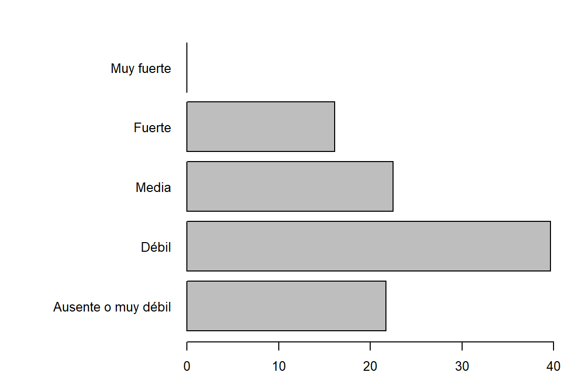

Chapter 3 Análisis exploratorio y descriptivo
3.1 Caso: Investigación en Maíz
Se realizó un estudio del comportamiento agronómico de líneas promisorias y variedades comerciales de maíz amarillo duro en un experimento ubicado en el distrito de Picsi, Provincia de Ferreñafe, Departamento de Lambayeque, Perú.
op <- par(mar = c(3,12,2,2), cex = 0.8)
cat("Información del inventario:\n")Información del inventario:# Estructura del data.frame
str(maiz)tibble [640 x 6] (S3: tbl_df/tbl/data.frame)
$ Tratamiento: chr [1:640] "T1" "T1" "T1" "T1" ...
$ Localidad : chr [1:640] "L1" "L1" "L1" "L1" ...
$ PAE : Ord.factor w/ 5 levels "Ausente o muy débil"<..: 4 4 4 3 3 3 3 3 4 4 ...
$ LG : num [1:640] 12.4 13.4 12.6 12.5 12.3 ...
$ AG : num [1:640] 10.32 9.69 10.13 9.32 9.27 ...
$ PM : num [1:640] 220 192 231 175 223 ...cat("Clase del inventario:\n")Clase del inventario:# Clase
class(maiz)[1] "tbl_df" "tbl" "data.frame"cat("Primeros registros:\n")Primeros registros:# Resumen de la base de datos
head(maiz,10)# A tibble: 10 x 6
Tratamiento Localidad PAE LG AG PM
<chr> <chr> <ord> <dbl> <dbl> <dbl>
1 T1 L1 Fuerte 12.4 10.3 220.
2 T1 L1 Fuerte 13.4 9.69 192.
3 T1 L1 Fuerte 12.6 10.1 231.
4 T1 L1 Media 12.5 9.32 175
5 T1 L1 Media 12.3 9.27 223.
6 T1 L1 Media 12.7 9.24 181.
7 T1 L1 Media 12.6 9.27 185.
8 T1 L1 Media 13 9.35 232.
9 T1 L1 Fuerte 12.9 10.0 236.
10 T1 L1 Fuerte 13.5 10.3 123 cat("Número de columnas:\n")Número de columnas:# Ncol
ncol(maiz)[1] 6cat("Número de filas:\n")Número de filas:# Nrow
nrow(maiz)[1] 640cat("Dimensiones:\n")Dimensiones:# Dimensiones
dim(maiz)[1] 640 6# Tabla de frecuencia
cat("Total de observaciones:",nrow(maiz),"\n")Total de observaciones: 640 cat("Tabla de frecuencia de los tratamientos:\n")Tabla de frecuencia de los tratamientos:table(maiz$Tratamiento) -> tabla1
tabla1
T1 T2 T3 T4 T5 T6 T7 T8
80 80 80 80 80 80 80 80 barplot(tabla1, horiz = FALSE, las = 1)cat("Tabla de frecuencia de las localidades:\n")Tabla de frecuencia de las localidades:table(maiz$Localidad) -> tabla2
tabla2
L1 L2
320 320 barplot(tabla2, horiz = TRUE, las = 1)par(op)3.2 Resumen general de los datos
summary(maiz) Tratamiento Localidad PAE LG AG PM
Length:640 Length:640 Ausente o muy débil:139 Min. : 8.37 Min. : 5.740 Min. : 22.1
Class :character Class :character Débil :254 1st Qu.:11.80 1st Qu.: 8.268 1st Qu.:192.2
Mode :character Mode :character Media :144 Median :12.41 Median : 8.855 Median :226.7
Fuerte :103 Mean :12.45 Mean : 8.828 Mean :224.6
Muy fuerte : 0 3rd Qu.:13.16 3rd Qu.: 9.393 3rd Qu.:256.7
Max. :16.62 Max. :12.780 Max. :358.4 3.3 Pigmentación Antociánica de los estigmas
op <- par(mar = c(3,12,2,2), cex = 0.8)
cat("Tabla de frecuencia de PAE:\n")Tabla de frecuencia de PAE:table(maiz$PAE) -> tabla3
addmargins(tabla3)
Ausente o muy débil Débil Media Fuerte Muy fuerte Sum
139 254 144 103 0 640 barplot(tabla3,horiz = TRUE, las = 1)cat("Tabla de proporciones de PAE:\n")Tabla de proporciones de PAE:addmargins(prop.table(tabla3))
Ausente o muy débil Débil Media Fuerte Muy fuerte Sum
0.2171875 0.3968750 0.2250000 0.1609375 0.0000000 1.0000000 cat("Tabla de frecuencia y proporciones de PAE:\n")Tabla de frecuencia y proporciones de PAE:cbind(addmargins(tabla3),addmargins(prop.table(tabla3))) [,1] [,2]
Ausente o muy débil 139 0.2171875
Débil 254 0.3968750
Media 144 0.2250000
Fuerte 103 0.1609375
Muy fuerte 0 0.0000000
Sum 640 1.0000000# Otras formas
cat("Tabla de frecuencia y proporciones de PAE:\n")Tabla de frecuencia y proporciones de PAE:summarytools::freq(maiz$PAE, plain.ascii = FALSE,
style = "rmarkdown")### Frequencies
#### maiz$PAE
**Type:** Ordered Factor
| | Freq | % Valid | % Valid Cum. | % Total | % Total Cum. |
|------------------------:|-----:|--------:|-------------:|--------:|-------------:|
| **Ausente o muy débil** | 139 | 21.72 | 21.72 | 21.72 | 21.72 |
| **Débil** | 254 | 39.69 | 61.41 | 39.69 | 61.41 |
| **Media** | 144 | 22.50 | 83.91 | 22.50 | 83.91 |
| **Fuerte** | 103 | 16.09 | 100.00 | 16.09 | 100.00 |
| **Muy fuerte** | 0 | 0.00 | 100.00 | 0.00 | 100.00 |
| **\<NA\>** | 0 | | | 0.00 | 100.00 |
| **Total** | 640 | 100.00 | 100.00 | 100.00 | 100.00 |cat("Tabla de frecuencia y proporciones de PAE:\n")Tabla de frecuencia y proporciones de PAE:summarytools::freq(maiz$PAE, plain.ascii = FALSE,
style = "rmarkdown", cumul = FALSE,
headings = FALSE,
report.nas = FALSE)
| | Freq | % |
|------------------------:|-----:|-------:|
| **Ausente o muy débil** | 139 | 21.72 |
| **Débil** | 254 | 39.69 |
| **Media** | 144 | 22.50 |
| **Fuerte** | 103 | 16.09 |
| **Muy fuerte** | 0 | 0.00 |
| **Total** | 640 | 100.00 |cat("Tabla de frecuencia y proporciones de PAE:\n")Tabla de frecuencia y proporciones de PAE:summarytools::freq(maiz$PAE, plain.ascii = FALSE,
style = "rmarkdown", cumul = TRUE,
headings = FALSE,
report.nas = FALSE)
| | Freq | % | % Cum. |
|------------------------:|-----:|-------:|-------:|
| **Ausente o muy débil** | 139 | 21.72 | 21.72 |
| **Débil** | 254 | 39.69 | 61.41 |
| **Media** | 144 | 22.50 | 83.91 |
| **Fuerte** | 103 | 16.09 | 100.00 |
| **Muy fuerte** | 0 | 0.00 | 100.00 |
| **Total** | 640 | 100.00 | 100.00 |p1 <- round(prop.table(tabla3)*100,2)
pie(p1, main = "Gráfico circular")pie(p1, main = "Gráfico circular", labels = c("Ausente o muy\ndébil (21.71 %)","Débil (39.69 %)","Media (22.5 %)","Fuerte (16.09 %)","Muy fuerte\n(0 %)"))barplot(tabla3,horiz = TRUE, las = 1, main = "Gráfico de barras",
col = "blue")barplot(prop.table(tabla3)*100,horiz = TRUE, las = 1)
cat("Tabla de contingencia de PAE según los tratamientos:\n")Tabla de contingencia de PAE según los tratamientos:table(maiz$PAE,maiz$Tratamiento) -> tabla4
addmargins(tabla4)
T1 T2 T3 T4 T5 T6 T7 T8 Sum
Ausente o muy débil 0 20 0 1 71 44 2 1 139
Débil 0 34 66 0 7 36 55 56 254
Media 45 20 14 17 2 0 23 23 144
Fuerte 35 6 0 62 0 0 0 0 103
Muy fuerte 0 0 0 0 0 0 0 0 0
Sum 80 80 80 80 80 80 80 80 640cat("Margenes de fila:\n")Margenes de fila:margin.table(tabla4,1)
Ausente o muy débil Débil Media Fuerte Muy fuerte
139 254 144 103 0 cat("Margenes de columna:\n")Margenes de columna:margin.table(tabla4,2)
T1 T2 T3 T4 T5 T6 T7 T8
80 80 80 80 80 80 80 80 barplot(tabla4,horiz = TRUE, las = 1, main = "Gráfico de barras")cat("Tabla de contingencia (Proporciones) de PAE según los tratamientos:\n")Tabla de contingencia (Proporciones) de PAE según los tratamientos:cat("Tabla de contingencia de PAE según la localidad:\n")Tabla de contingencia de PAE según la localidad:table(maiz$PAE,maiz$Localidad) -> tabla5
tabla5
L1 L2
Ausente o muy débil 65 74
Débil 127 127
Media 81 63
Fuerte 47 56
Muy fuerte 0 0barplot(tabla5,horiz = TRUE, las = 1, main = "Gráfico de barras", beside = T)par(op)3.4 Exploración y estadísticas de la localidad 1
Loc1 <- subset(maiz, maiz$Localidad=="L1")
summary(Loc1[,c(3,4,5,6)]) PAE LG AG PM
Ausente o muy débil: 65 Min. : 9.60 Min. : 6.800 Min. : 22.1
Débil :127 1st Qu.:12.15 1st Qu.: 8.475 1st Qu.:199.5
Media : 81 Median :12.74 Median : 9.000 Median :231.3
Fuerte : 47 Mean :12.76 Mean : 9.005 Mean :228.7
Muy fuerte : 0 3rd Qu.:13.40 3rd Qu.: 9.482 3rd Qu.:256.8
Max. :16.62 Max. :12.120 Max. :356.1 # summary(Loc1[,3:6])Diagrama de Tukey (diagrama de cajas, box plot)
op <- par(mar = c(4,3,2,2), cex = 0.8)
LGLoc1 <- with(Loc1, boxplot(LG, col = "Yellow", main = "Longitud de grano"))
LGLoc1$stats
[,1]
[1,] 10.44
[2,] 12.15
[3,] 12.74
[4,] 13.41
[5,] 15.07
$n
[1] 320
$conf
[,1]
[1,] 12.62871
[2,] 12.85129
$out
[1] 15.50 16.62 10.00 9.90 9.92 9.60 9.83
$group
[1] 1 1 1 1 1 1 1
$names
[1] ""AGLoc1 <- with(Loc1, boxplot(AG, col = "Orange", main = "Ancho de grano"))AGLoc1$stats
[,1]
[1,] 7.010
[2,] 8.470
[3,] 9.000
[4,] 9.485
[5,] 11.000
$n
[1] 320
$conf
[,1]
[1,] 8.91035
[2,] 9.08965
$out
[1] 11.01 6.80 6.90 11.78 11.01 6.85 6.88 11.19 12.12
$group
[1] 1 1 1 1 1 1 1 1 1
$names
[1] ""3.5 Exploración y estadísticas de los tratamientos en Maíz
Estadísticas
promedios <- with(maiz, tapply.stat(maiz[,4:6],Tratamiento,function(x) mean(x,na.rm = TRUE)))
promedios Tratamiento LG AG PM
1 T1 12.27925 9.236750 214.4975
2 T2 12.41137 8.915375 214.7250
3 T3 11.63850 8.380625 192.0925
4 T4 12.24137 9.232125 248.9787
5 T5 12.96575 7.834375 222.0712
6 T6 12.02725 9.709500 209.6138
7 T7 12.58475 8.583500 247.0175
8 T8 13.42400 8.731375 248.0725sd <- with(maiz, tapply.stat(maiz[,4:6],Tratamiento,function(x) sd(x,na.rm = TRUE)))
sd Tratamiento LG AG PM
1 T1 0.8252024 0.7796474 48.15737
2 T2 1.0147367 0.6724392 40.80827
3 T3 1.0458418 0.6713492 52.99939
4 T4 0.7469698 0.6477198 34.69407
5 T5 0.8486173 0.7227722 39.96212
6 T6 1.0328270 0.9407900 43.59886
7 T7 0.9791264 0.7983133 51.69534
8 T8 0.7943433 0.5543493 47.92838Diagrama de Tukey para el ancho de grano de los tratamientos
op <- par(mar = c(10,2,2,2), cex = 0.8)
ancho <- with(maiz, boxplot(AG ~ Tratamiento, col = "Green",
main = "Diagrama de ancho de grano por tratamiento",
las = 2, xlab = ""))par(op)Diagrama de Tukey para el longitud de grano de los tratamientos
op <- par(mar = c(10,2,2,2), cex = 0.8)
longitud <- with(maiz, boxplot(LG ~ Tratamiento, col = "Red",
main = "Diagrama de longitud de grano por tratamiento",
las = 2, xlab = ""))par(op)Tabla de frecuencia y gráfico de líneas para Número de hileras por mazorca
# Importación
maiz2 <- read_excel("datos 1.xlsx", sheet = "Datos 2")
# Etiquetado de variables
maiz2$PAE <- car::recode(maiz2$PAE, "1='Ausente o muy débil';
3='Débil'; 5='Media'; 7='Fuerte'; 9='Muy fuerte'")
maiz2$PAE <- factor(maiz2$PAE,
levels = c("Ausente o muy débil","Débil","Media","Fuerte",
"Muy fuerte"), ordered = TRUE)
# Variable cuantitativa discreta
# Tabla de frecuencias
f1 <- table(maiz2$HPP)
p2 <- round(prop.table(f1)*100,2)
# La función que permite unir vectores
tabla6 <- cbind(f1,p2)
tabla6 f1 p2
2 1 0.16
8 1 0.16
10 2 0.31
12 45 7.03
14 209 32.66
15 2 0.31
16 194 30.31
17 1 0.16
18 128 20.00
19 2 0.31
20 44 6.88
22 11 1.72# Gráfico de líneas
x <- row.names(tabla6)
graphics::plot(p2, type = "h",col = 3,main = "Gráfico de líneas",las = 2)
Tabla de frecuencia y gráfico de líneas para Longitud de grano
# Variable cuantitativa continua
# Tabla de frecuencias
h2 <- with(maiz2, graph.freq(LG,plot = TRUE))print(table.freq(h2), row.names = FALSE) Lower Upper Main Frequency Percentage CF CPF
8.0 8.9 8.45 3 0.5 3 0.5
8.9 9.8 9.35 5 0.8 8 1.2
9.8 10.7 10.25 24 3.8 32 5.0
10.7 11.6 11.15 84 13.1 116 18.1
11.6 12.5 12.05 229 35.8 345 53.9
12.5 13.4 12.95 180 28.1 525 82.0
13.4 14.3 13.85 92 14.4 617 96.4
14.3 15.2 14.75 21 3.3 638 99.7
15.2 16.1 15.65 1 0.2 639 99.8
16.1 17.0 16.55 1 0.2 640 100.0# Grafico
h <- hist(maiz2$LG)
polygon.freq(h)
psych::multi.hist(maiz2[,5:7],global = F)
psych::histBy(as.data.frame(maiz2),"LG","Tratamiento")
psych::histBy(LG~Localidad,data=as.data.frame(maiz2))
tapply(maiz2$LG, maiz2$Localidad,mean) L1 L2
12.76062 12.13244 Resumen general de un dataset
psych::describe(maiz2) vars n mean sd median trimmed mad min max range skew kurtosis se
Tratamiento* 1 640 4.50 2.29 4.50 4.50 2.97 1.00 8.00 7.00 0.00 -1.24 0.09
Localidad* 2 640 1.50 0.50 1.50 1.50 0.74 1.00 2.00 1.00 0.00 -2.00 0.02
HPP 3 640 15.80 2.34 16.00 15.71 2.97 2.00 22.00 20.00 0.02 1.54 0.09
GPM 4 640 32.95 5.35 33.00 32.92 5.93 2.00 49.00 47.00 -0.22 1.05 0.21
LG 5 640 12.45 1.05 12.41 12.47 0.97 8.37 16.62 8.25 -0.26 0.90 0.04
AG 6 640 8.83 0.91 8.86 8.83 0.82 5.74 12.78 7.04 0.13 0.88 0.04
PM 7 640 224.63 49.27 226.70 225.62 47.29 22.10 358.40 336.30 -0.23 0.22 1.95
PAE* 8 640 2.33 0.99 2.00 2.29 1.48 1.00 4.00 3.00 0.30 -0.93 0.04summarytools::descr(maiz2)Non-numerical variable(s) ignored: Tratamiento, Localidad, PAEDescriptive Statistics
maiz2
N: 640
AG GPM HPP LG PM
----------------- -------- -------- -------- -------- --------
Mean 8.83 32.95 15.80 12.45 224.63
Std.Dev 0.91 5.35 2.34 1.05 49.27
Min 5.74 2.00 2.00 8.37 22.10
Q1 8.27 29.00 14.00 11.80 192.15
Median 8.86 33.00 16.00 12.41 226.70
Q3 9.39 37.00 18.00 13.16 256.70
Max 12.78 49.00 22.00 16.62 358.40
MAD 0.82 5.93 2.97 0.97 47.29
IQR 1.12 8.00 4.00 1.36 64.47
CV 0.10 0.16 0.15 0.08 0.22
Skewness 0.13 -0.22 0.02 -0.26 -0.23
SE.Skewness 0.10 0.10 0.10 0.10 0.10
Kurtosis 0.88 1.05 1.54 0.90 0.22
N.Valid 640.00 640.00 640.00 640.00 640.00
Pct.Valid 100.00 100.00 100.00 100.00 100.00